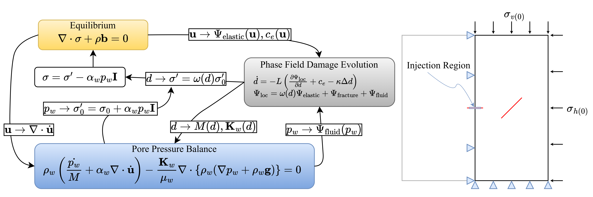

💧 2D Hydraulic Fracture Simulation in Saturated Media
🚀 Crack Extension via Fluid Injection
A 0.5m × 1m domain is used to observe how fluid injection interacts with a pre-existing crack. The pore pressure is linearly increased from 0 to 45 MPa over time.
Boundary conditions: bottom \( u_y \) and left \( u_x \) are fixed, with vertical stress \( \sigma_v = -10 \) MPa applied on the top and horizontal stress \( \sigma_h = -5 \) MPa on the right.
The model solves three governing equations: phase field fracture (PF), mechanical equilibrium, and pore pressure balance. Their interactions are summarized as:
🔠Equilibrium ↔ Pore Pressure Balance:
• \( \mathbf{u} \) affects \( \nabla \cdot \dot{\mathbf{u}} \) in the fluid equation.
• \( p_w \) is used to calculate trial effective stress \( \sigma_0' \), which goes into PF.
🔠Pore Pressure Balance ↔ Phase Field:
• \( d \) affects porosity, Biot’s coefficient, and modulus \( M(d) \).
• \( p_w \) contributes to fluid driving energy \( \Psi_{\text{fluid}} \) in PF.
🔠Equilibrium ↔ Phase Field:
• \( \mathbf{u} \) provides elastic energy \( \Psi_{\text{elastic}} \) and extra driving force \( c_e \) in PF.
• \( d \) weakens \( \sigma_0' \) to compute degraded effective stress \( \sigma' \), and total stress \( \sigma \).
🚀 Multi-Physics System and Boundary Conditions

🔑 Key Highlights
✅ Equilibrium and pore pressure are fully coupled. PF model is loosely coupled with the rest.
✅ Custom implementation of interaction between PF and fluid system.
âš ï¸ Note 1: Main simulation uses non-AD + sub-app uses AD. Convergence is only achieved after manually tuning the variable scales.
âš ï¸ Note 2: Negative pore pressure is manually restricted: \( p_w \geq 0 \).
🔠Analysis Entries
✅ AT1 and Cohesive Phase Field (CPF) models are used. See Crack Geometric Function effects for details.
✅ Two permeability models are tested:
- Directional Permeability:
\[ \mathbf{K}_w = \mathbf{K}_{w(0)} + A(\mathbf{I} - \mathbf{n}_d \otimes \mathbf{n}_d), \quad A = \phi^2 d^2 l^2 \] - Exponential Permeability:
\[ \mathbf{K}_w = \mathbf{K}_{w(0)} \exp(A), \quad A = (c_1 d)^{c_2}, \text{ with } c_1 = 2.5, c_2 = 3.5 \]
📊 Simulation Results
Directional Permeability with AT1

Exponential Permeability with AT1

Directional Permeability with CPF

Convergence Comparison
✅ Negative \( K_{xy} \) shows up in directional permeability because it alters normal and tangential crack flow directions. It's expressed in global coordinates.
✅ Here, \( \mathbf{n}_d \approx \nabla d / |\nabla d| \) is used as a quick estimate. More accurate approaches exist but are more tedious and code-heavy.
✅ Exponential permeability gives the best efficiency — it takes only ~1 hr to simulate 40 seconds of hydraulic fracture here.
✅ In directional cases, CPF cracks grow slightly slower than AT1, which is consistent with my previous observation.
✅ In practice, this difference is tiny. Focus should instead be on choosing appropriate material parameters and BCs.